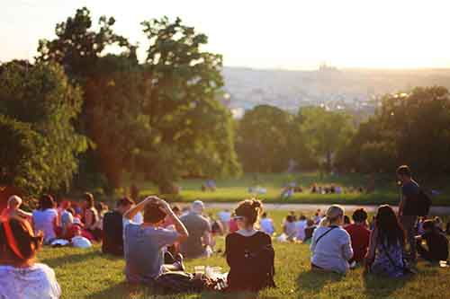

Welcome to Pleasant Grove
The beautiful city of Pleasant Grove, Utah is situatated at the base of Mt. Timpanogos. Mount Timpanogos rises to a height of 11,752 feet. Pleasant Grove features stunning views of this mountain from anywhere in town.
Pleasant Grove was settled by the Mormon pioneers. Early settlers were sent by Brigham Young and the community was officially established on September 13, 1850.
On January 19, 1855 the territorial legislature approved Pleasant Grove to become incorporated. Since then this little town has grown to a business hub hosting multi-national businesses that span the globe.
Pleasant Grove History
Pleasant Grove has a rich and storied history. Pleasant Grove was settled by the Mormon pioneers. Early settlers were sent by Brigham Young and the community was officially established on September 13, 1850.
On January 19, 1855 the territorial legislature approved Pleasant Grove to become incorporated. Since Pleasant Grove was located in such a beautiful place it was quickly settled. The planning of the early pioneers is evident as the town is laid out in a standard Utah grid with plenty of space for homes and businesses.
In the early days farming and orchards were the primary industry in Pleasant Grove. Pleasant Grove was world famous for it's sweet strawberries that thrived in the local soil. As time has passed the orchards and farms have been replaced and this little town has grown to a business hub hosting multi-national businesses that span the globe.
Pleasant Grove Vital Statistics

- Population: 33,509 people
- City Government: Mayor and City Council
- City Celebration: Strawberry Days held annually in June
- Attractions: Evermore Park, Christa McAuliffe Space Education Center, Purple Turtle
Pleasant Grove is the perfect place to live and do business. With a large, highly educated workforce you will have no problem staffing your business with residents who want to work close to home.
We hope that you will visit Pleasant Grove and seriously consider Pleasant Grove as the home of your business.